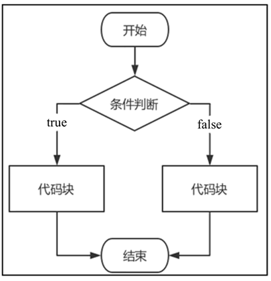

首页 > 编程笔记
Go语言if语句详解
Go语言中，条件判断是由 if 语句实现的，根据条件的判断结果（true 或 false）来执行相应的代码块。
if 语句的语法格式如下：
如下图所示，是 if 语句的执行过程。
程序在执行的时候，首先分析“判断条件1”是否为 true，若为 true，则执行“执行语句1”的代码块，否则往下执行，程序继续分析“判断条件2”是否为 true，若为 true，则执行“执行语句2”的代码块，否则继续往下执行，以此类推。如果所有条件判断不成立，程序最后就会执行 else 语句的“执行语句N”代码。
比如使用 if 语句实现简单的体重评测，代码如下：
判断条件的变量还可以在 if 语句中定义，变量只能在 if 语句中使用，如果在 if 语句之外使用，则视为未定义变量，换句话说，在 if 语句中定义的变量，变量作用域只适用于 if 语句，示例如下：
if 嵌套是把 if…else if…else 语句放在另一个 if…else if…else 语句的代码里面，语法格式如下：
在一个程序中，if 语句嵌套得越多，程序的路径数量就越多，不仅会使代码冗余，而且业务逻辑更加臃肿复杂，对测试人员和功能的维护存在一定难度。
if 语句的语法格式如下：
if 判断条件1 {
执行语句1
}else if 判断条件2 {
执行语句2
...
...
}else {
执行语句N
}
简单来说，if 语句判断某个变量是否符合条件，如果符合就执行相应的代码块，如果不符合就执行另一个代码块。如下图所示，是 if 语句的执行过程。

if 语句的语法格式说明如下：
- 每个判断条件后面必须加上中括号“{ }”，中括号里面编写符合条件所执行的功能代码。
- 在 if 语句中，只有一个 if 和 else 关键字，但允许有多个 else if 判断条件，语句出现的顺序必须为 if->else if->else。
- 一个简单的 if 语句可以只有一个if关键字，else if 和 else 可以省略。
程序在执行的时候，首先分析“判断条件1”是否为 true，若为 true，则执行“执行语句1”的代码块，否则往下执行，程序继续分析“判断条件2”是否为 true，若为 true，则执行“执行语句2”的代码块，否则继续往下执行，以此类推。如果所有条件判断不成立，程序最后就会执行 else 语句的“执行语句N”代码。
比如使用 if 语句实现简单的体重评测，代码如下：
package main
import "fmt"
func main() {
var weight int
fmt.Printf("输入你的体重（kg）：")
fmt.Scan(&weight)
fmt.Printf("\n")
if weight < 40 {
fmt.Printf("体重值为%v，偏轻\n", weight)
}else if 40 <= weight && weight <= 70{
fmt.Printf("体重值为%v，正常\n", weight)
}else {
fmt.Printf("体重值为%v，偏重\n", weight)
}
}
上述代码分别运行 3 次，依次输入数值 30、50 和 80，程序会依次输出体重偏轻、体重正常和体重偏重。判断条件的变量还可以在 if 语句中定义，变量只能在 if 语句中使用，如果在 if 语句之外使用，则视为未定义变量，换句话说，在 if 语句中定义的变量，变量作用域只适用于 if 语句，示例如下：
package main
import (
"fmt"
"math/rand"
"time"
)
func main() {
// 随机数
rand.Seed(time.Now().Unix())
// num := rand.Intn(100)从100中随机生成整数
if num := rand.Intn(100); num < 20 {
fmt.Printf("随机数为%v\n", num)
}else if num > 20{
fmt.Printf("随机数为%v\n", num)
}
}
在 if 语句中定义变量能节省内存开支，因为变量只作用在 if 语句中，当 if 语句执行完毕后，Go 语言会自动释放变量的内存地址，从而节省计算机的资源开支。if的多层嵌套
一个if语句还可以嵌套多个if语句，只要在某个条件的代码中嵌套一个或多个if语句就能实现复杂的逻辑判断。if 嵌套是把 if…else if…else 语句放在另一个 if…else if…else 语句的代码里面，语法格式如下：
if 判断条件1 {
if 判断条件一 {
执行语句一
}else if 判断条件二 {
执行语句二
}else {
执行语句三
}
}else if 判断条件2 {
if 判断条件四 {
执行语句四
}else if 判断条件五 {
执行语句五
}else {
执行语句六
}
}else {
执行语句N
}
如果将体重评测加入年龄限制，在评测体重之前应先判断年龄大小，使体重评测更加准确，实现代码如下：
package main
import "fmt"
func main() {
var weight, age int
fmt.Printf("输入你的年龄：")
fmt.Scan(&age)
fmt.Printf("\n")
fmt.Printf("输入你的体重（kg）：")
fmt.Scan(&weight)
fmt.Printf("\n")
if age < 10 {
fmt.Printf("你的年龄为%v\n", age)
if weight < 15 {
fmt.Printf("体重值为%v，偏轻\n", weight)
}else if weight >= 15 && weight < 30 {
fmt.Printf("体重值为%v，正常\n", weight)
}else{
fmt.Printf("体重值为%v，偏重\n", weight)
}
}else if 15 <= age && age <= 30{
fmt.Printf("你的年龄为%v\n", age)
if weight < 40 {
fmt.Printf("体重值为%v，偏轻\n", weight)
}else if weight >= 40 && weight < 60 {
fmt.Printf("体重值为%v，正常\n", weight)
}else{
fmt.Printf("体重值为%v，偏重\n", weight)
}
}else {
fmt.Printf("你的年龄为%v\n", age)
if weight < 60 {
fmt.Printf("体重值为%v，偏轻\n", weight)
}else if weight >= 60 && weight < 80 {
fmt.Printf("体重值为%v，正常\n", weight)
}else{
fmt.Printf("体重值为%v，偏重\n", weight)
}
}
}
从上述代码看到，最外层的 if 语句设置了 3 个条件判断，每个条件判断的代码再设置了 3 个条件判断，因此程序的路径数量为 3×3=9，也就说在程序中输入体重和年龄后，程序根据数值大小会出现 9 种不同的输出结果。在一个程序中，if 语句嵌套得越多，程序的路径数量就越多，不仅会使代码冗余，而且业务逻辑更加臃肿复杂，对测试人员和功能的维护存在一定难度。
关注公众号「站长严长生」，在手机上阅读所有教程，随时随地都能学习。内含一款搜索神器，免费下载全网书籍和视频。

微信扫码关注公众号